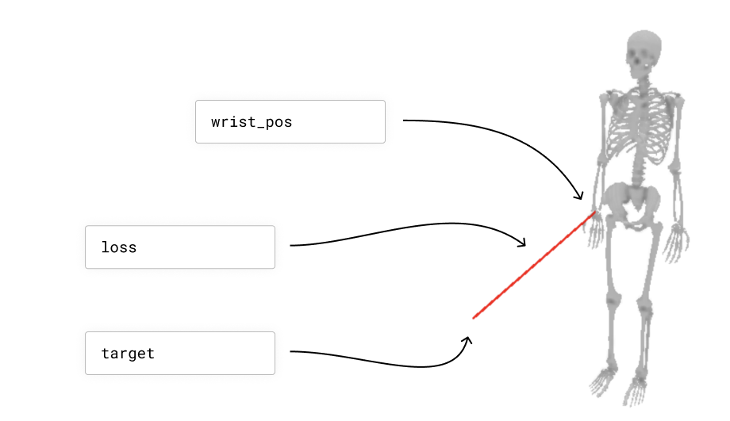
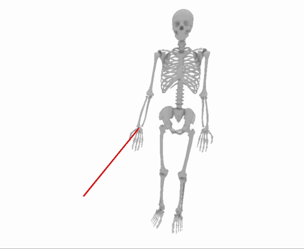

Solving Optimization Problems with Skeletons
A Brief Intro to Optimization
Let’s suppose you have a skeleton, and you would like to find the set of joint angles that minimizes the distance between the skeleton’s wrist and a target point. The skeleton’s joint angles are your “parameters”, and the distance between the skeleton’s wrist and the target point is your “loss”. We are going to try to find a setting for the parameters that minimize the loss.
Here is a way to visualize this example problem:
import nimblephysics as nimble
import numpy as np
rajagopal_opensim: nimble.biomechanics.OpenSimFile = nimble.RajagopalHumanBodyModel()
skeleton: nimble.dynamics.Skeleton = rajagopal_opensim.skeleton
right_wrist: nimble.dynamics.Joint = skeleton.getJoint("radius_hand_r")
# Set an arbitrary target location
target: np.ndarray = np.array([0.5, 0.5, 0.5])
# Get the world location of the wrist
wrist_pos: np.ndarray = skeleton.getJointWorldPositions([right_wrist])
# Create a GUI and serve on port 8080
gui = nimble.NimbleGUI()
gui.serve(8080)
# Render the skeleton to the GUI
gui.nativeAPI().renderSkeleton(skeleton)
# Draw a red line connecting the wrist to the target
gui.nativeAPI().createLine(key="wrist_error", points=[wrist_pos, target], color=[1.0, 0.0, 0.0, 1.0])
# Compute the loss
error = wrist_pos - target
loss = np.inner(error, error)
print("Loss: "+str(loss))
# Block until the GUI is closed
gui.blockWhileServing()
That will create this scenario:
{kind=link}
The trouble here is that the relationship between the skeleton’s joint angles and the distance between the skeleton’s wrist and the target point is complicated. It is not a simple linear function with a closed form solution.
Happily, computers are fast, and we don’t need a closed form solution. We just need a way to “bump” a guess for the parameters a tiny bit to make the loss a tiny bit smaller, and then we can do that over and over and over again at lightning speed (because computers are fast), and end up with a pretty good answer.
Here is what that process will look like, slowed down by approximately 1000x to make each step more visible:
{kind=link}
So the question is: how do we know which way to “bump” our guess for the parameters to make the loss a tiny bit smaller?
What we really need to know is, “if we increase a parameter (for example, the skeleton’s elbow angle) a tiny bit, how much does the loss (i.e. the distance between the skeleton’s wrist and the target point) change?” If the answer is that the loss goes down (i.e. the wrist gets closer to the target), which is what we want, we can increase the parameter a tiny bit (i.e. flex the elbow a tiny bit more). If the answer is that the loss goes up (i.e. the wrist gets further away from the target), which is not what we want, we can decrease the parameter a tiny bit (i.e. straighten the elbow a tiny bit), since presumably that will have the opposite effect as increasing the parameter a tiny bit (this is an important assumption in all of gradient-based optimization, which is the “smoothness” of your function).
It is pretty straightforward to approximately compute the derivative of the loss with respect to the parameters using the “brute force” method, by literally trying out a bunch of different values for the parameters and seeing how the loss changes. However, this is very slow, and we can do better.
What we want is to use calculus and fast C++ code to quickly find the way we can change each of the parameters all at once to make the loss go down as much as possible. This “how to change every parameter to improve as fast as possible” vector is called the “gradient” of the loss with respect to the parameters. The gradient is a vector, and it has one entry for each parameter. Each entry tells us how to change that parameter to make the loss go down as much as possible.
Here is some example code to do this optimization, which was used to generate the GIF above:
import nimblephysics as nimble
import numpy as np
import time
rajagopal_opensim: nimble.biomechanics.OpenSimFile = nimble.RajagopalHumanBodyModel()
skeleton: nimble.dynamics.Skeleton = rajagopal_opensim.skeleton
right_wrist: nimble.dynamics.Joint = skeleton.getJoint("radius_hand_r")
# Set an arbitrary target location
target: np.ndarray = np.array([0.5, 0.5, 0.5])
# Create a GUI and serve on port 8080
gui = nimble.NimbleGUI()
gui.serve(8080)
# Get an initial guess for positions
positions: np.ndarray = skeleton.getPositions()
for i in range(1000):
# Render the skeleton to the GUI
gui.nativeAPI().renderSkeleton(skeleton)
# Get the world location of the wrist
wrist_pos: np.ndarray = skeleton.getJointWorldPositions([right_wrist])
# Draw a red line connecting the wrist to the target
gui.nativeAPI().createLine(key="wrist_error", points=[wrist_pos, target], color=[1.0, 0.0, 0.0, 1.0])
# Compute the loss
error = wrist_pos - target
loss = np.inner(error, error)
print("Loss["+str(i)+"]: "+str(loss))
# Get gradient - we will discuss this more in following sections
d_loss_d_wrist_pos = 2 * (wrist_pos - target)
d_wrist_pos_d_joint_angles = skeleton.getJointWorldPositionsJacobianWrtJointPositions([right_wrist])
d_loss_d_joint_angles = d_wrist_pos_d_joint_angles.T @ d_loss_d_wrist_pos
# Do not update the pelvis position in the world
d_loss_d_joint_angles[0:6] = 0.0
# Update the positions
positions -= 0.05 * d_loss_d_joint_angles
skeleton.setPositions(positions)
time.sleep(0.05)
# Block until the GUI is closed
gui.blockWhileServing()
This code is mostly stuff you have seen before, except for the gradient computation, which we will discuss in the following sections.
Computing Derivatives, Gradients, and Jacobians
In the case of our example problem, as is often the case in optimization problems, the loss is not expressed directly in “parameter space.” It takes us two hops to get from parameters to loss. We start with the skeleton’s joint angles, then we use those to compute the skeleton’s wrist position, and then we use that to compute the distance from the skeleton’s wrist to the target (the loss).
Let’s switch from Python to a tiny bit of math, to make this expression really crisp. Let’s introduce some math variables as equivalents to the code in the last section:
\(q\) is
positions: np.ndarray, the skeleton’s joint angles\(w\) is
wrist_pos: np.ndarray, the skeleton’s wrist position\(p\) is
target: np.ndarray, and the target position for the wrist\(w = f(q)\) is
wrist_pos = skeleton.getJointWorldPositions([right_wrist]), the function that maps joint angles to wrist position (we generally call this the “forward kinematics” function)\(L(q) = \|w - p\|\) is
loss = np.linalg.norm(wrist_pos - target), the loss function
So our two hops are:
\(w = f(q)\)
\(L(q) = \|w - p\|\)
So then our optimization problem is to find the joint angles \(q\) that minimize \(L(q)\), going through the two hops above. We are going to do this by bumping \(q\) in a direction to to decrease \(L(q)\) a tiny bit, and then repeating that process over and over again.
In order to know which direction to bump \(q\) in, we want to know how \(L(q)\) changes when we bump each element of \(q\) a tiny bit. We can do this by taking the derivative of \(L(q)\) with respect to an element of \(q\), let’s call that \(q_i\), which we write in the following format:
\(\frac{\partial L(q)}{\partial q_i}\)
This notation is called “partial derivative notation”, and it is a way of saying “how much does the top thing change (in this case that change is \(\partial L(q)\)) when we change the bottom thing a tiny bit (in this case that change is \(\partial q_i\))?” We write it as a ratio. When we take the derivative of \(L(q)\) with respect to \(q_i\), we get a single number. If, for all the different \(q_i\), we take each derivative in turn and stack all of those numbers together, we would get a vector, which we call the “gradient” of \(L(q)\) with respect to \(q\), which we write in the following notation:
\(\frac{\partial L(q)}{\partial q} = \begin{bmatrix} \frac{\partial L(q)}{\partial q_1} \\ \frac{\partial L(q)}{\partial q_2} \\ \vdots \\ \frac{\partial L(q)}{\partial q_n} \end{bmatrix}\)
If we are taking the derivative of a vector-valued function with respect to another vector, we will get a whole matrix that we call that a “Jacobian”. For example, if we want to know how the wrist position changes when we change the joint angles, we would write:
\(\frac{\partial w}{\partial q} = \begin{bmatrix} \frac{\partial w_x}{\partial q_1} & \frac{\partial w_x}{\partial q_2} & \cdots & \frac{\partial w_x}{\partial q_n} \\ \frac{\partial w_y}{\partial q_1} & \frac{\partial w_y}{\partial q_2} & \cdots & \frac{\partial w_y}{\partial q_n} \\ \frac{\partial w_z}{\partial q_1} & \frac{\partial w_z}{\partial q_2} & \cdots & \frac{\partial w_z}{\partial q_n} \end{bmatrix}\)
Nimble has lots of efficient C++ implementations to compute various Jacobians, and the one above can be computed with the following code:
d_wrist_pos_d_joint_angles = skeleton.getJointWorldPositionsJacobianWrtJointPositions([right_wrist])
Now that we know how the wrist position changes when we change the joint angles, we can use the chain rule to compute how the loss changes when we change the joint angles. It is handy to memorize that the gradient of the inner product of a vector with itself, which is a very common final step in a loss function, is just twice the vector itself.
\(\frac{\partial x^Tx}{\partial x} = 2x\)
So then we can use the chain rule to compute the gradient of the loss with respect to the joint angles:
\(\frac{\partial L(q)}{\partial q} = \frac{\partial L(q)}{\partial w} \frac{\partial w}{\partial q} = 2(w - p) \frac{\partial w}{\partial q}\)
By convention, we typically transpose this to get a column vector for the gradient, so that we can write it as a matrix multiplication:
\(\frac{\partial L(q)}{\partial q} = \frac{\partial w}{\partial q}^T 2(w - p)\)
This all ends up becoming these three simple lines of code:
# Get gradient - we will discuss this more in following sections
d_loss_d_wrist_pos = 2 * (wrist_pos - target)
d_wrist_pos_d_joint_angles = skeleton.getJointWorldPositionsJacobianWrtJointPositions([right_wrist])
d_loss_d_joint_angles = d_wrist_pos_d_joint_angles.T @ d_loss_d_wrist_pos
Once we have the gradient of our loss, it is a simple matter of subtracting a tiny bit of the gradient from our current guess for the joint angles, and then repeating that process over and over again.
List of Built-In Gradients and Jacobians
If you are looking for a particular Jacobian to fulfill the chain rule, and you do not see it, it may not be included because it is always zero (the two quantities are not related).
For example, we do not have a function to compute the Jacobian of the world position of the wrist with respect to the joint velocities (which would be named skeleton.getJointWorldPositionsJacobianWrtJointVelocities()), because those two quantities are not related.
For Jacobians you expect to be non-zero, you can use your auto-complete tool to search for them, or read below:
The general naming convention for some Nimble Jacobians is skeleton.get<output>JacobianWrt<parameters>(), where <output> is the thing you want to take the derivative of, and <parameters> is the thing you want to take the derivative with respect to.
These functions all return rectangular Numpy matrices.
skeleton.getJointWorldPositionsJacobianWrtJointPositions(joints=...)skeleton.getJointWorldPositionsJacobianWrtBodyScales()skeleton.getJointWorldPositionsJacobianWrtGroupScales()skeleton.getMarkerWorldPositionsJacobianWrtJointPositions(markers=..., joints=...)skeleton.getMarkerWorldPositionsJacobianWrtBodyScales(markers=...)skeleton.getMarkerWorldPositionsJacobianWrtGroupScales(markers=...)TODO: complete this list
There is a larger set of Jacobians which take their “with respect to” portion as the argument wrt. For these, the wrt argument is on the nimble.neural.WithRespectTo object. Options are as follows:
nimble.neural.WithRespectTo.WRT_POSITIONnimble.neural.WithRespectTo.WRT_VELOCITYnimble.neural.WithRespectTo.WRT_FORCEnimble.neural.WithRespectTo.WRT_ACCELERATIONnimble.neural.WithRespectTo.WRT_GROUP_SCALESnimble.neural.WithRespectTo.WRT_GROUP_MASSESnimble.neural.WithRespectTo.WRT_GROUP_INERTIAS
The Jacobians that take these arguments are given below:
skeleton.getGyroReadingsJacobianWrt(gyros=..., wrt=...)skeleton.getAccelerometerReadingsJacobianWrt(gyros=..., wrt=...)TODO: complete this list
Composing your own Jacobians
If you need a Jacobian that is not directly provided by Nimble, you can compose your own using the chain rule.
For example, if you have \(x = f(g(y))\), and you have \(\frac{\partial f}{\partial g}\) and \(\frac{\partial g}{\partial y}\), you can compute \(\frac{\partial x}{\partial y}\) by multiplying the two Jacobians together, in code something like the following:
d_x_d_g = ... # Get this from Nimble
d_g_d_y = ... # Get this from Nimble
d_x_d_y = d_x_d_g @ d_g_d_y
Velocity and Acceleration are Linear
A handy fact to be aware of is that if you hold the positions of a skeleton fixed, the world velocity of any body on the skeleton is a linear functions of the joint velocities!
That means that if you have the Jacobian that relates changes in joint angles to changes in body positions, for example, you can rely on the fact that that relationship will remain constant regardless of the joint velocities.
To use the math from the previous section, where we have \(\dot{q}\) is joint velocities and \(\dot{w}\) is world velocities, we can say:
\(\frac{\partial \dot{w}}{\partial \dot{q}} = \frac{\partial w}{\partial q}\), which you can get with skeleton.getJointWorldPositionsJacobianWrtJointPositions([right_wrist])
If we have a desired velocity that we want the hand to be travelling at, we can compute the joint velocities that will achieve that velocity with simple linear least squares:
\(\dot{q} = \frac{\partial \dot{w}}{\partial \dot{q}}^{-1} \dot{w}_{desired}\)
In code, this looks like the following:
d_w_d_q = skeleton.getJointWorldPositionsJacobianWrtJointPositions([right_wrist])
d_q_d_w = np.linalg.inv(d_w_d_q)
desired_wrist_vel = np.array([0.0, 0.0, 0.0])
desired_joint_vel = d_q_d_w @ desired_wrist_vel